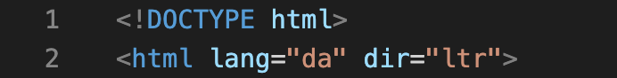
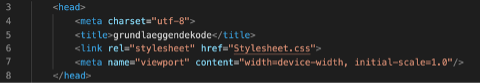
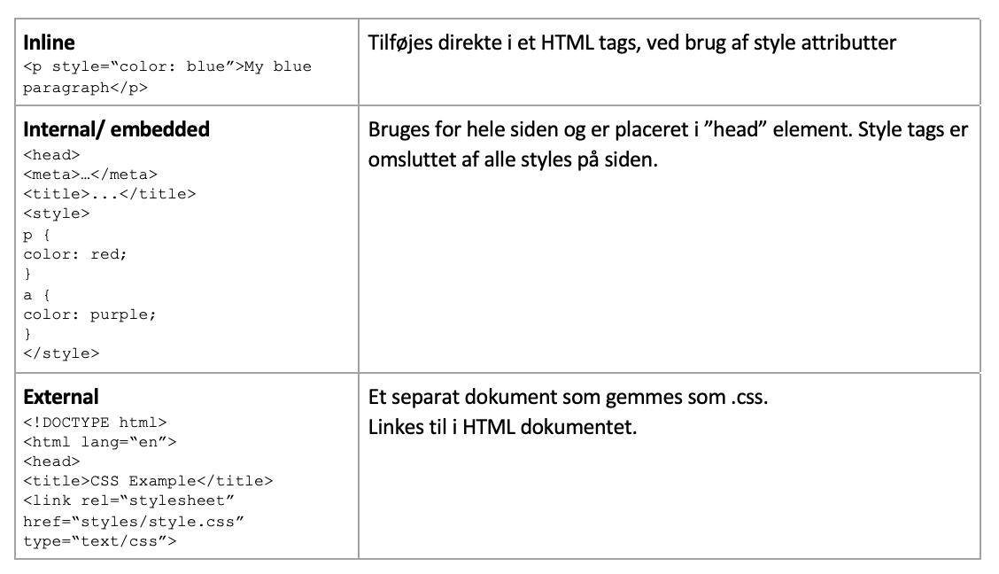
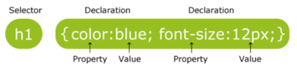
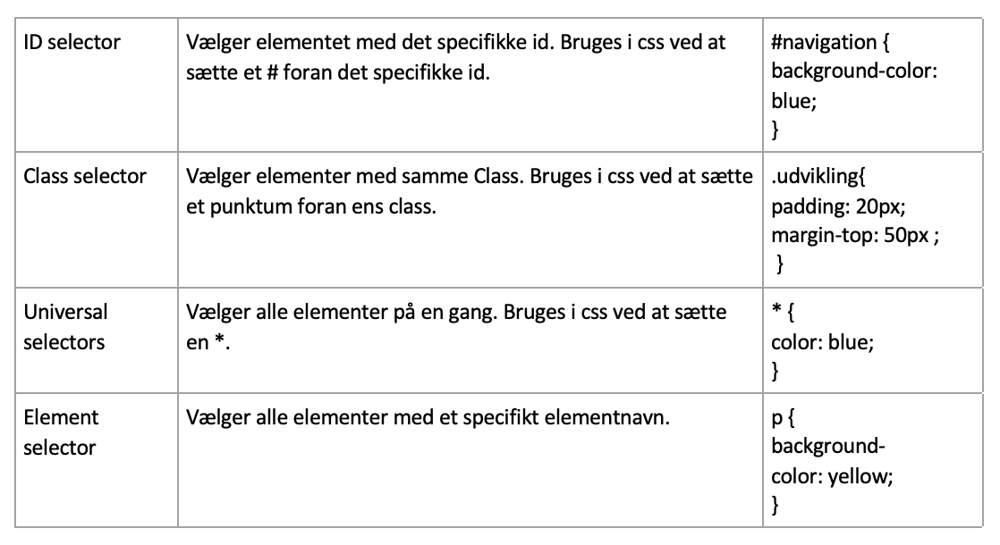
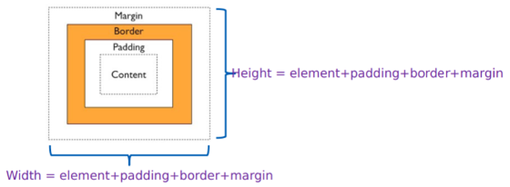
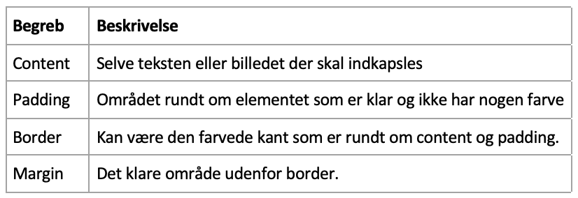
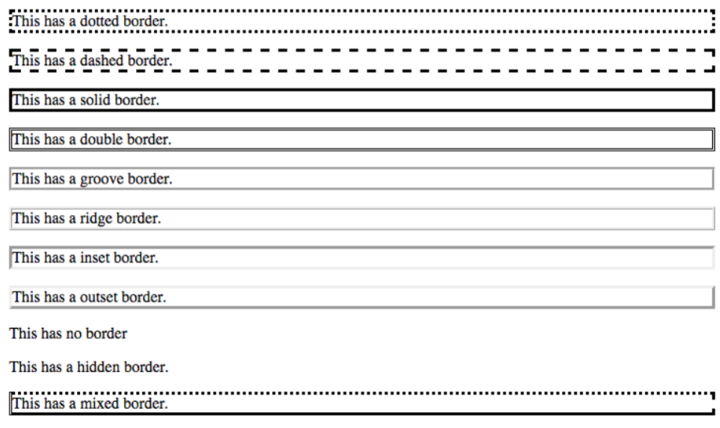

Internettet er et forbindelsesnetværk, altså et netværk mellem en masse IP-adresser. Internetter fungerer på et globalt niveau imellem millioner af computer og andre elektroniske enheder. Med internetter er det muligt at få adgang til næsten alt information, kommunikere og mange andre ting. Som del af internettet er The World Wide Web, forkortet WWW. World wide web er en samling af hjemmesider lageret på webservere og forbundet til lokale computere via internettet. For at kunne tilgå en webside på www, skal man bruge en web-browser såsom Google Chrome, med flere. WWW blev opfundet i 1989 af en brite ved navn Tim Berners-Lee. Den egentlige ide med hans opfindelse var at gøre det nemmer at dele viden og informationer mellem videnskabsmænd på tværs af forskellige universiteter og institutter verden over. Berners-Lee mente at alle mennesker skulle kunne have gavn af www gratis og uden begrænsninger. Derfor oprettede man World Wide Web Consortium, W3C, som den dag i dag stadig sørger for at holde Webbet opdateret. Så opsummeret er internettet muligheden for at sende informationer rundt blandt en masse knudepunkter, og skabe et netværk. Webserver er en computer der oplagrer og udlevere data på internettet. Da webserveren er på internettet, kan den kommunikere med andre enheder der også er forbundet til internettet. Når man åbner en webside, sender man en anmodning til den server som opbevarer websiden, som dernæst svarer webserverne ved at åbne siden du vil se. Dette kaldes http anmodning og svar. Serveren som oplagrer dine data, er hardware mens systemet og dens programmer inden i computeren er software. Klienter er programmer der kobler sig til servere og udveksler information.
HTML betyder Hyper text markup language, og bruges til at strukturere indholdet i et dokument der senere bliver til vores hjemmeside. Med HTML kan man kun bestemme strukturen og ikke udseendet på ens tekst. HTML fungerer ved at man har forskellige tags som gør forskellige ting i vores dokument. Først starter man med et starttag som består af < og >, dernæst skriver man sin tekst og slutter derefter med et slut tag som består af . Når man starter sit HTML dokument, starter man med et DOCTYPE html tag, som fortæller browseren hvilken type dokument den skal forvente. Dernæst kommer på dokumentet kommer et html tag der skal indeholde hvilket sprog som websiden skal bruge, og hvilken vej teksten skal læses.
Efter at have beskrevet hvilken type dokument man arbejder med samt sprog og læseretning, kommer hovedet af dokumentet. I head tagget skriver man forskellige oplysninger om dokumentet. I dette eksempel ses først meta charset="utf-8" som er en unicode, som betyder at den kan oversætte næsten alle tegn til ens webside. Dernæst kommer en titel, som er den man kan se i ens browser. Herefter kommer et link til et stylesheet, som indeholder designet til websidet. Det næste er kommet tagget meta name="viewport" content="width=device-width, initial-scale=1.0"/, som fortæller browseren hvordan den skal kontrollere sidens dimensioner og størrelser.
Det næste tag på ens HTML dokument er body-tagget. Den indeholder alle de visuelle elementer af websiden. Det er her strukturen af dokumentet bliver bygget op. Placeringen af elementerne afgør hvor på siden de vil dukke op på websiden.
CSS står for cascading style sheets, og beskriver hvor HTML elementerne bliver vist visuelt. Et CSS kan kontrollere flere websider på én gang. Så mens HTML bruges til at arrangere indholdet på siden, bruges CSS til fx fonts, farver, baggrund ovs. CSS kan tilføjes til dit dokument på tre forskellige måder: inline, internal og external.
I CSS bruger man selectors, modsat til HTML som bruger tags. Selectors er titlerne givet til stylesne ved internal og external stylesheets. For hver selector er der egenskaber inden for krøllede parenteser ({ }). Der gives en værdi til egenskaben efter et kolon (:). Semikoloner (;) bruges til at adskille egenskaberne. En selector viser hvilket element i HTML filen vi arbejder med. Dernæst skal man haven en property samt en value. Property er hvad du vil ændre fx font størrelse, mens value er den værdi du vil ændre propertyen til. en proberty og en value, kaldes sammen for en declaration.
Der er forskellige måder man kan ramme elementer til styling på.
CSS box model bruges når elementer fra HTML skal indkapsles. Til box model bruger man margins padding, borders og elementet der skal indkapsles.
 Der kan indtastes en max-width, som bruges til at sætte en maksimumstørrelse på bredden, som gør at bredden passer også selvom man gør browseren mindre.
Der findes forskellige muligheder for border design.
Border-style ses overfor og border-width bestemmer hvor tyk border’en skal være. Border-color, bestemmer farven af border’en. Man kan med border-radius bestemme om border’en skal have afrundet hjørner.
Text alignment, er hvor teksten kan blive placeret i enten venstre eller højre side, centreret eller justified. Text align deklaration kan se ud som følgende
Text decoration, er dekoration af teksten. Deklarationerne kan se ud som følgende
Text-transform bruges til at bestemme om alt tekst skal være med capslock, små bogstaver eller om hvert ord skal starte med stort. Deklarationerne kan se ud som følgende
At lærer at kode sine egne hjemmeside og style dem så de matcher det udtryk man selv gerne vil have, har været vildt spændende. Dog har det ikke altid været lige nemt at arbejde med, og har givet mange frustrationer. Dog kan man ikke lade værd med at være nysgerrig når man arbejder med det.